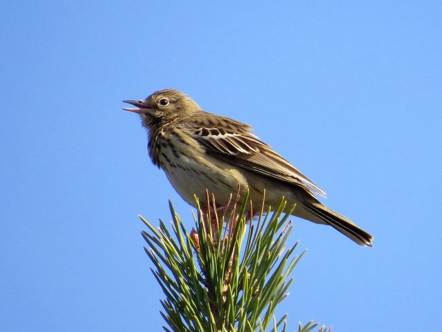

ट्री पिपिटTree Pipit
Anthus trivialis · Motacillidae · BRD-0211

- Scientific name वैज्ञानिक नाम
- Anthus trivialis (Linnaeus, 1758)
- Family कुल
- Motacillidae
- Hindi हिंदी
- ट्री पिपिट
- Local names स्थानीय नाम
- tree pipit, pipit
- Status here यहाँ की स्थिति
- native
- Movement आवागमन
- Winter visitor
- Known from कहाँ दर्ज
- Others have published records from the Basti–Ayodhya districts बस्ती–अयोध्या के ज़िलों से दूसरों के प्रकाशित अभिलेख
- IUCN IUCN
- LC
- Review समीक्षा
- audited and independently read
When to look कब देखें
Winter visitor शीतकालीन प्रवासी. Expected mainly in September, October, November, December, January, February, March, April, May. मुख्यतः सितंबर, अक्टूबर, नवंबर, दिसंबर, जनवरी, फ़रवरी, मार्च, अप्रैल, मई में अपेक्षित।
Arrives in September–October from breeding grounds in the Himalayas and Palearctic; departs by April–May. Expected in open woodlands, grasslands with trees, and cultivated areas across eastern UP. Documented in Parvati Arga and Bakhira surveys. All migrants and visitors →
Uses and possibilities उपयोग और संभावनाएँ
Drawn from the documented uses in the profile below, where each is labelled traditional, current or a research lead. All uses →
Tell it apart from इनसे अलग पहचानें
ट्री पिपिट / Tree Pipit
Anthus trivialis (Linnaeus, 1758) — Motacillidae
ट्री पिपिट — हिमालय से सर्दियों में आने वाली पतली चिड़िया। इसकी धारीदार छाती, पेड़ों पर बैठना और पेड़ों से जमीन पर उतरने की आदत इसे जमीन वाली पिपित से अलग करती हैं। पूर्वी उत्तर प्रदेश में सितंबर से मई तक खुली जगहों के पेड़ों पर देखी जाती है।
Quick Identification त्वरित पहचान
| Feature | Description |
|---|---|
| Size | Small pipit; 15–17 cm long |
| Build | Slender; moderate tail |
| Plumage | Streaked brown and buff above; streaked underparts |
| Streaking | Fine streaks on breast and flanks |
| Head | Buff supercilium; dark loral area |
| Behaviour | Often perches on trees; hops on ground |
| Flight | Undulating; often between tree and ground |
| Voice | Sharp contact calls |
Field tip: A small, slender pipit with fine streaking on breast. Key field mark is its habit of perching on trees and launching from trees to the ground (opposite of ground pipits). The longer tail and less buff underparts distinguish it from Olive-backed Pipit.
हिंदी — कैसे पहचानें:
छोटी, पतली चिड़िया।
पेड़ों पर बैठता है।
छाती पर धारियाँ।
जमीन पर उतरकर दौड़ता है।
Morphology आकारिकी
Biometrics:
| Measurement | Range |
|---|---|
| Total length | 150–170 mm |
| Wing | 85–100 mm |
| Tail | 70–85 mm |
| Bill | 11–13 mm |
| Tarsus | 22–26 mm |
| Weight | 18–25 g |
Size: 15–17 cm long; wingspan 25–28 cm.
Plumage: Buff-brown above with darker streaking on crown and back. Supercilium buff; loral area dark. Throat and upper breast buff with fine brown streaking. Lower breast and belly whitish with streaks on flanks. Wings dark with pale fringes. Tail dark brown.
Sexual dimorphism: Minimal.
Head: Buff supercilium prominent; dark loral stripe; ear-coverts streaked.
Bill: Fine, pointed; insectivore's bill.
Legs and feet: Pale pinkish; relatively long; adapted for ground and tree foraging.
Juveniles: Similar to adults but with more prominent streaking.
Vocalisations. Call repertoire:
- Contact call: A thin, high-pitched tsip or tseep, given in flight and between perches.
- Alarm call: Repeated chip-chip-chip.
- Song: A musical warble; mainly heard on breeding grounds. Frequency.
हिंदी: कोमल "सीप" या "त्सीप" आवाज़। अलर्ट होने पर "चिप-चिप" कहता है।
Behaviour & Ecology व्यवहार और पारिस्थितिकी
Ground and tree forager: Tree Pipit forages both on the ground and in trees, though primarily on the ground. It feeds on:
- Small insects and spiders
- Small flies and gnats
- Small beetles and bugs
- Occasionally small seeds
Foraging: Hops on ground picking insects; also gleans from tree foliage and bark. Characteristic behaviour of launching from tree to ground and returning to tree.
Social behaviour: Solitary or in pairs; sometimes loose groups during migration.
Roosting: On the ground or in low vegetation; sometimes in trees.
Predators: Shrikes, hooded crows, occasionally small raptors.
Flight: Undulating flight, especially between tree and ground perches.
हिंदी: पेड़ों और जमीन दोनों पर कीड़े खोजता है। अकेला या जोड़ों में। खुली जगहों में पेड़ों की जरूरत।
Life Cycle / Phenology जीवन चक्र
| Month | Event |
|---|---|
| January–February | Peak presence in eastern UP; feeding |
| March–April | Spring passage; gradual departure northward |
| May–June | Breeding in Himalayas and Palearctic; absent from eastern UP |
| July–August | Post-breeding dispersal |
| September–October | Autumn arrival of winter visitors; establishment |
| November–December | Winter residents; territorial behaviour |
Breeding: Does not breed in eastern UP; breeds in the Himalayas and Palearctic (April–August). Nest on ground or in low tree cavity. Clutch typically 4–5 eggs.
Moult: Prebasic moult occurs before arrival at wintering grounds (July–September).
Site fidelity: Some individuals show philopatry to particular wintering areas.
हिंदी: सितंबर में आता है, मई तक रहता है। हिमालय में प्रजनन करता है। पेड़ों वाली खुली जगहों में। पेड़ से जमीन पर उतरने की आदत।
Host Plants or Prey आहार
| Food Type | Examples | Feeding Behaviour |
|---|---|---|
| Small insects | Flies, gnats, small beetles | Picked from ground and vegetation |
| Spiders | Small spiders | Gleaned from foliage and ground |
| Small bugs | Various insects | Ground foraging and tree gleaning |
| Occasionally seeds | Grass seeds | Minor component |
हिंदी: छोटे कीड़े और मकड़ियाँ खाता है। पेड़ों की पत्तियों और जमीन से कीड़े निकालता है।
Predators / Natural Enemies शत्रु
- Avian predators: Brown Shrike, Hooded Crow, occasionally small raptors
- Mammalian predators: Small snakes, mongooses
- Parasites: Feather mites and parasitic lice
हिंदी: बड़ी शिकारी चिड़ियाँ इसका शिकार कर सकती हैं।
Agricultural / Human Relevance कृषि प्रासंगिकता
Protected species: The Tree Pipit is protected under the Wildlife (Protection) Act 1972. Hunting is prohibited in India.
Pest control: Feeds on small insects, including agricultural pests, contributing to natural pest management.
Habitat indicator: Presence indicates open woodlands and grasslands with scattered tree cover.
Field indicator: Its presence, particularly when combined with Olive-backed Pipit, indicates healthy open-woodland ecosystems.
Conservation status: Populations are stable; no major threats identified.
हिंदी: यह विधि अधिनियम 1972 के तहत संरक्षित है। इसका शिकार करना कानूनी रूप से निषिद्ध है।
Expected Locally स्थानीय रूप से अपेक्षित
Not a field record. Written from published accounts for eastern Uttar Pradesh. No confirmed local sighting yet — if you have seen it, that is what the atlas needs.
अभी तक स्थानीय पुष्टि नहीं। यह विवरण प्रकाशित स्रोतों से है, किसी अवलोकन से नहीं।
Winter range: Expected in eastern UP from September to May in open woodlands, grasslands with scattered trees, and cultivated areas. GBIF holds published records from the wider Awadh–Purvanchal plain.
Habitat preference: Open woodlands, grasslands with scattered trees, field margins with trees. Requires trees for perching as well as open ground for foraging.
Peak season: December–February, when numbers peak from Himalayan populations.
Detection: Listen for its characteristic contact call in open woodland. Look for birds moving between trees and ground. Early morning is best.
What a first record would be: A dated photograph or detailed observation of the bird in eastern UP submitted through the About page, with location and date.
हिंदी: पेड़ों वाली खुली जगहों पर सर्दियों में अपेक्षित। घाघरा और राप्ती के पास के खेतों में पेड़ों से कूदता दिखता है। पार्वती अर्गा में देखी गई है।
Distribution वितरण
Global range: Breeds in the Palearctic; winters across the Indian subcontinent and South-East Asia. Highly migratory.
In India: Widespread winter visitor across northern and central India; rarer in southern peninsular regions.
In Uttar Pradesh: Winter visitor throughout the state in suitable open-woodland habitats; more common in eastern districts.
In Basti district / eastern UP: Expected as a winter visitor in open woodlands and cultivated areas with tree cover; regular presence documented in survey records.
Research Questions शोध प्रश्न
- What is the detailed wintering distribution and habitat use of Tree Pipit in eastern UP, and how does it overlap with Olive-backed Pipit?
- How do population numbers vary seasonally and annually?
- What is the diet composition during the winter season compared with breeding grounds?
- खेतों और जंगलों के किनारों में इसकी उपस्थिति में अंतर क्या है?
- How does tree availability affect pipit abundance and distribution? (A child can compare pipits in areas with different tree density.)
- क्या यह प्रजाति पेड़ों की संख्या में कमी के कारण भारत में कम हो रही है?
Similar Species मिलती-जुलती प्रजातियाँ
| Species | Key Difference | Hindi | Field Rule | |
|---|---|---|---|---|
| [[olive_backed_pipit\ | Olive-backed Pipit]] (Anthus hodgsoni) | Darker back; less buffy; stays more on ground; different call | जैतून की पीठ वाली पिपित | Tree Pipit is buffy, often in trees. Olive-backed is darker and prefers ground. |
| Richard's Pipit (Anthus richardi) | Much larger; different habitat | बड़ी पिपित | Much larger and different appearance. |
Field rule: The Tree Pipit is a slender pipit with fine streaking, often seen perching on trees and launching to the ground. Its habit of returning from ground to tree is distinctive. If the bird stays on ground and appears darker and less buffy, it is likely Olive-backed Pipit.
Taxonomy & Classification वर्गीकरण
Original description. The species was described by Linnaeus in 1758. The type locality is Palearctic Europe.
Subspecies. Two subspecies recognized: A. t. trivialis (Europe and western Asia, occurs in Asia) and A. t. macronyxii (southern Africa).
Family and order placement. Order Passeriformes; family Motacillidae (pipits and wagtails). The genus Anthus contains many species of ground-dwelling and woodland pipits.
Phylogenetic notes. Closely related to other Anthus species, particularly the Olive-backed Pipit with which it often co-occurs in winter.
IUCN status rationale. Assessed as Least Concern (LC) globally. Populations are stable and widespread across the Palearctic. The species is adaptable to various habitats. In India, it is protected under the Wildlife Protection Act 1972.
हिंदी: पूरे यूरेशिया में फैली प्रजाति। सर्दियों में भारत में आती है। कानून से पूरी तरह सुरक्षित है।
Photo Gallery फोटो गैलरी
No photos yet — add field photos to media/species/tree_pipit/ and run node scripts/sync_photos.js.
Wanted photos:
- Adult on tree perch
- In flight
- On ground, showing streaking
- Launching from tree to ground
- Winter habitat
References संदर्भ
- Linnaeus, C. (1758). Systema Naturae per Regna Tria Naturae (10th edn). Laurentii Salvii, Holmiae. Vol. 1, p. 167.
- Ali, S. & Ripley, S. D. (1973). Handbook of the Birds of India and Pakistan. Vol. 9 (Warblers to Redstarts). Oxford University Press, Delhi. Pp. 213–216.
- Cramp, S. (ed.) (1988). Handbook of the Birds of Europe, the Middle East and North Africa: The Birds of the Western Palearctic. Vol. V (Tyrant Flycatchers to Thrushes). Oxford University Press. Pp. 249–256.
- Rasmussen, P. C. & Anderton, J. C. (2005). Birds of South Asia: The Ripley Guide. Smithsonian Institution, Washington, D.C. Pp. 417–418.
- GBIF Occurrence Data — Anthus trivialis, India.
- IUCN Red List (2024). Anthus trivialis — BirdLife International assessment. IUCN, Cambridge. Status: Least Concern.
Source file: species/fauna/birds/tree_pipit.md